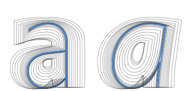
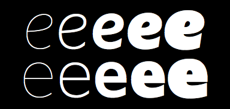
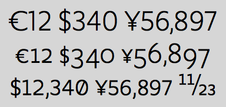
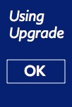

Upgrade typography
A work-horse sans, with character.
[Introduction about Upgrade. Partly take from Yve‘s article with reference?]

Extreme range of weights
With the aim of Upgrade to work optimal in heavy duty and multi-purpose typography, an extreme wide range of weights is available, from Hairline to Ultra Black. Read more
Extended glyph set
Upgrade includes an extended glyph set, supported by a number of stylistic feature options, such as small caps, inferior and superior figures, inline capital “J” and alternative “g”. Read more

Five master drawings per character
Where often the different weight of a typeface are made by interpolating two or three master drawings per characters, the Upgrade is made from five original drawings. Read more

Figures and fractions
Upgrade offers a variety of figures and supporting currency symbols for the use with capital, small caps, lower case and fractions. Read more
Heavy duty usage in print and online
Upgrade variations for all types of usage
The wide viariety of weights, in combination with the additional styles to be released in the near future (e.g. Upgrade Text, Upgrade Round and Upgrade Var), makes the Upgrade family a perfect choice for corporate publications. These need to be represented in print and online documents, supporting the wide range of typographic functions in many sizes. Learn more

Design Design Space
The website Design Design Space is using the web version of several Upgrade weights. This study and coaching environment offers designers and design students an online environment to develop their design process. Learn more

Book covers
For usage in book covers, a nice range of very thin weights is available. Learn more

Online applications
As geometric sans, Upgrade works well low resolution environments. Learn more

Long-read typography
The variety of weights and figure set make the Upgrade family a valid tool for long-read typography. Learn more

Corporate identities
Future releases of Upgrade include variants that can be used for logo’s and other identity elements. Learn more